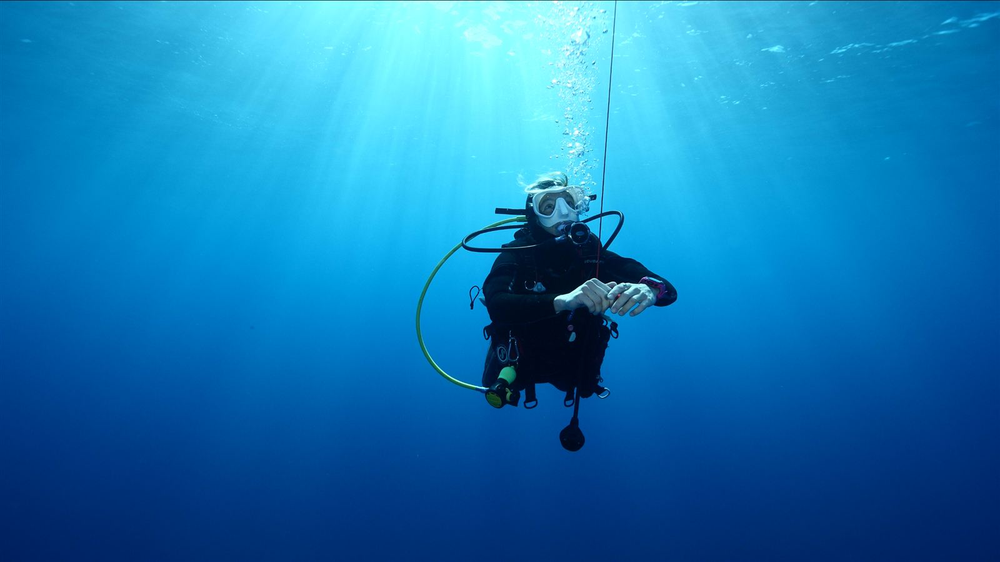
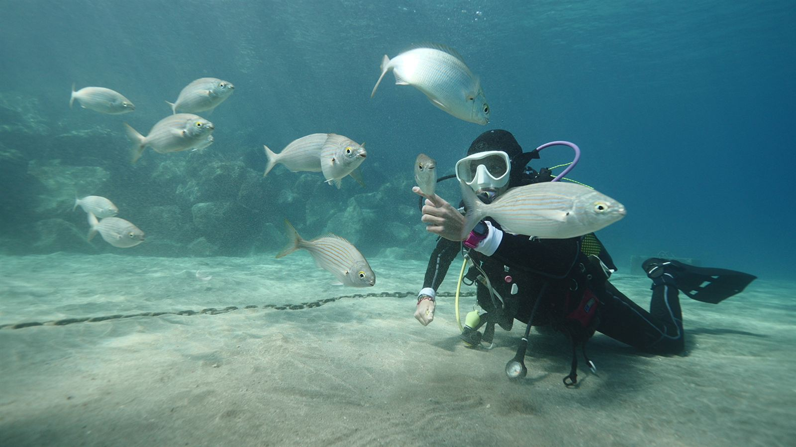
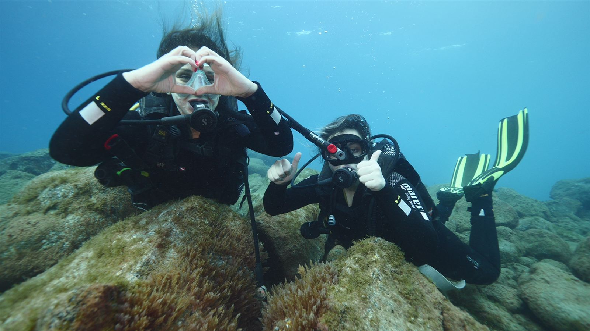
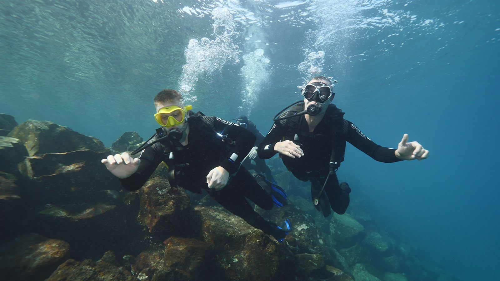
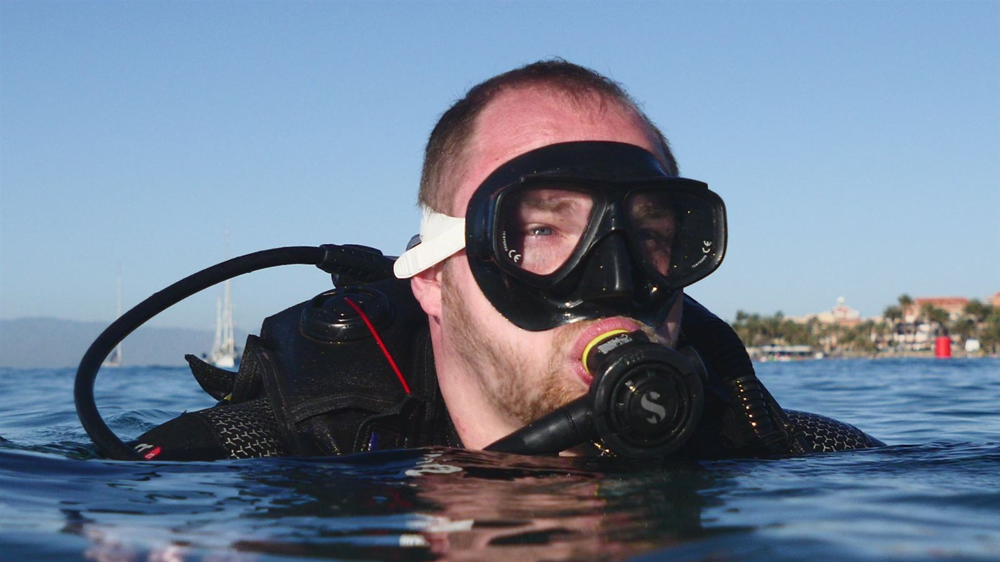
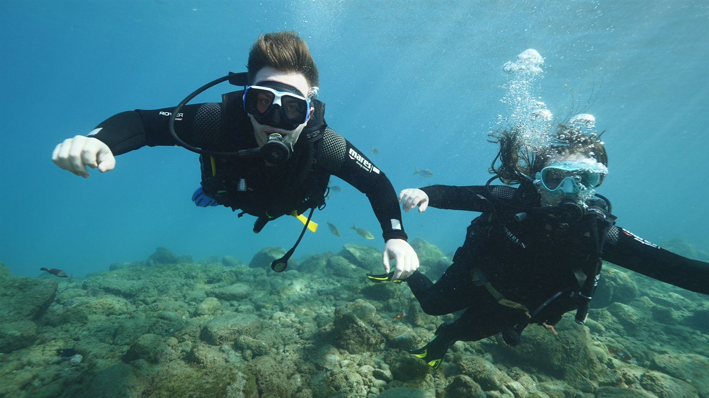
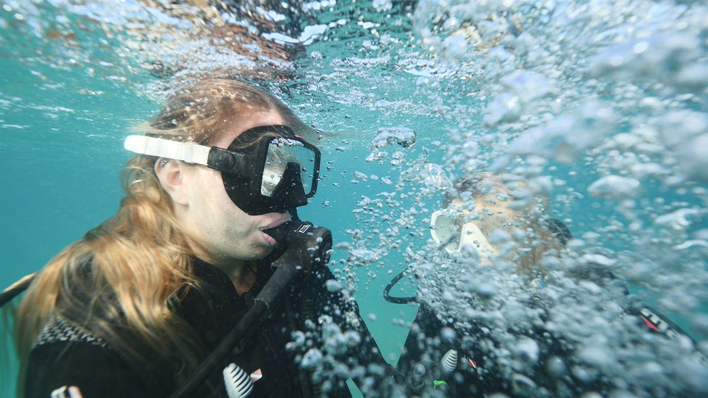
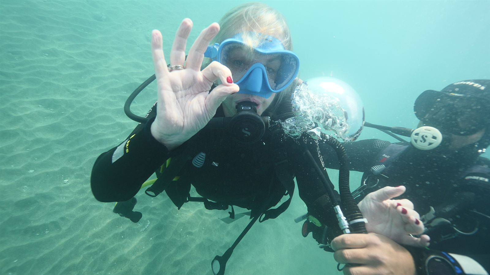
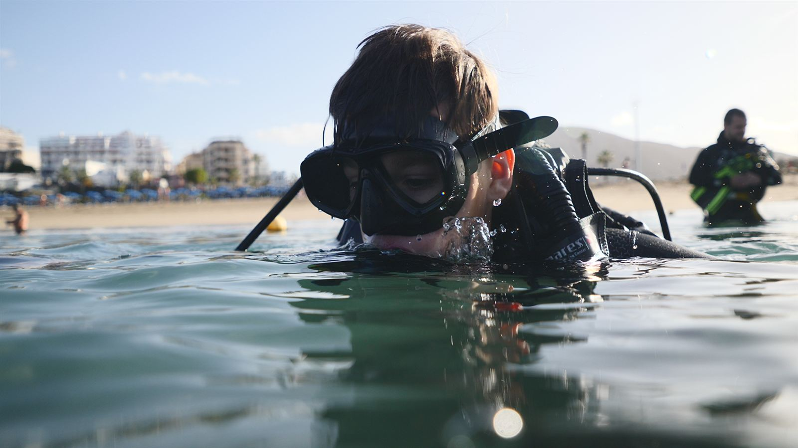
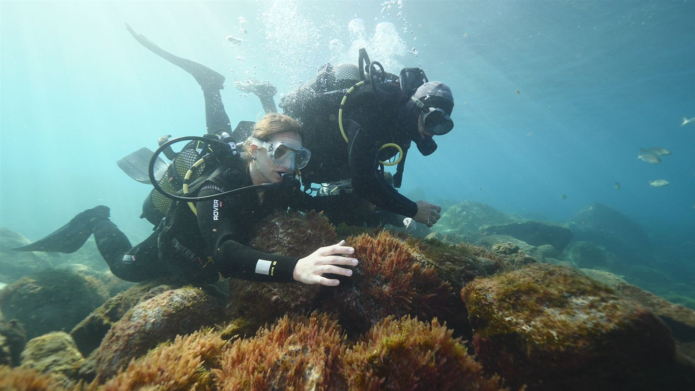
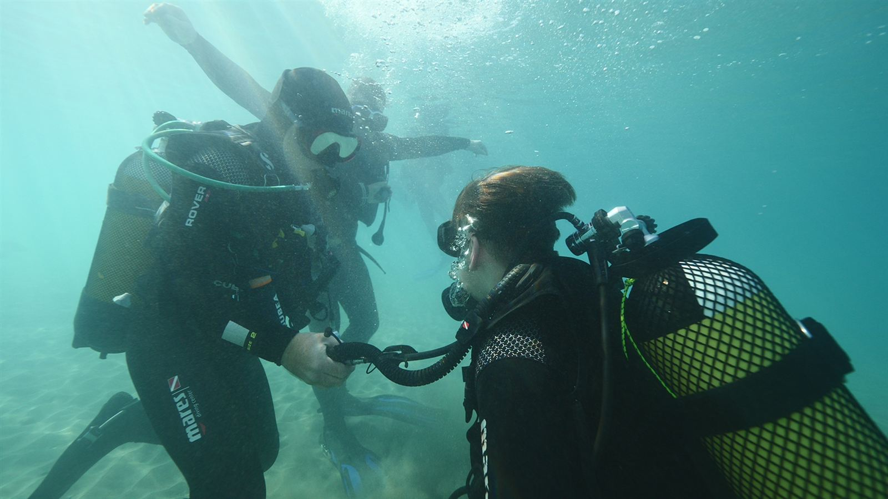
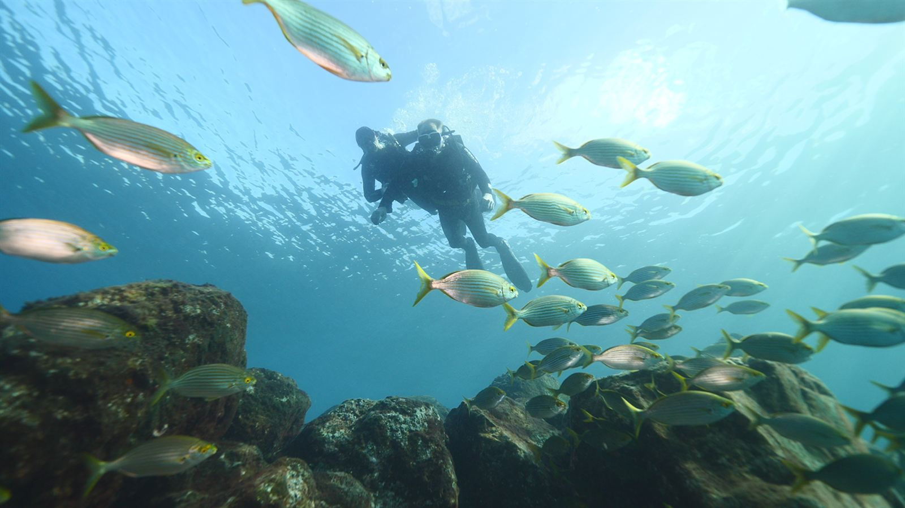
Immersioni guidate nei migliori dive site del sud di Tenerife, tra pareti vulcaniche, grotte, relitti e fondali ricchi di vita marina. Esperienze adatte sia a principianti che a subacquei certificati, con spot selezionati in base a livello, condizioni del mare e tipo di immersione desiderata.
Uno dei siti più accessibili del sud, perfetto per battesimi del mare e prime immersioni. Ingresso direttamente dalla spiaggia, fondali colorati con fauna locale, inclusi cavallucci marini.
Fondo roccioso che degrada dolcemente fino a 21 m, ricco di vita: grugnitori, herrera, barracuda, cefali, trigoni e angelshark. Nella zona bassa due piccole grotte a circa 4 m.
A nord-ovest di Puerto Colón. Reef roccioso fino a 18 m che alterna piattaforme e fondo sabbioso. Con corrente diventa un leggero drift. Grandi banchi di pesci, trigoni e angelshark.
Un classico assoluto, la "Cueva de los Camarones". Parete verticale fino a 30 m su fondale sabbioso con garden eels e murene. Per i più esperti, due "tribute" subacquei a 35 e 38 m.
Tra il faro e El Condesito, piccola e affascinante grotta a circa 18 m, abitata da una grande cernia. Amata dai fotografi per la luce in controluce. Possibili correnti: meglio con mare calmo.
Immersione su uno dei relitti più iconici di Tenerife: nave cargo incagliatasi nel 1971, oggi spezzata in un canyon a ~20 m. Incontri frequenti con polpi, seppie e vieja.
Tra i migliori spot per la vita marina. Fondale roccioso che scende da 10 a 21 m, adatto a tutti i livelli. Banchi di pesce, herrera, barracuda, trigoni e angelshark.
Relitto di 42 m in eccellente stato su fondo sabbioso vicino a Palm-Mar. Paradiso per fotografi grazie alla visibilità. Durante la sosta di sicurezza non è raro essere affiancati da delfini.
Vicino a Puerto Colón, due imbarcazioni in acciaio su fondale sabbioso a ~22 m, rifugio per trombetta, ricciole, polpi e razze. Correnti minime, perfetto per godersi la vita marina.
Dimmi il tuo livello e quando vuoi immergerti. Ti consiglio gli spot giusti e la disponibilità.
💬 Contattaci su WhatsApp